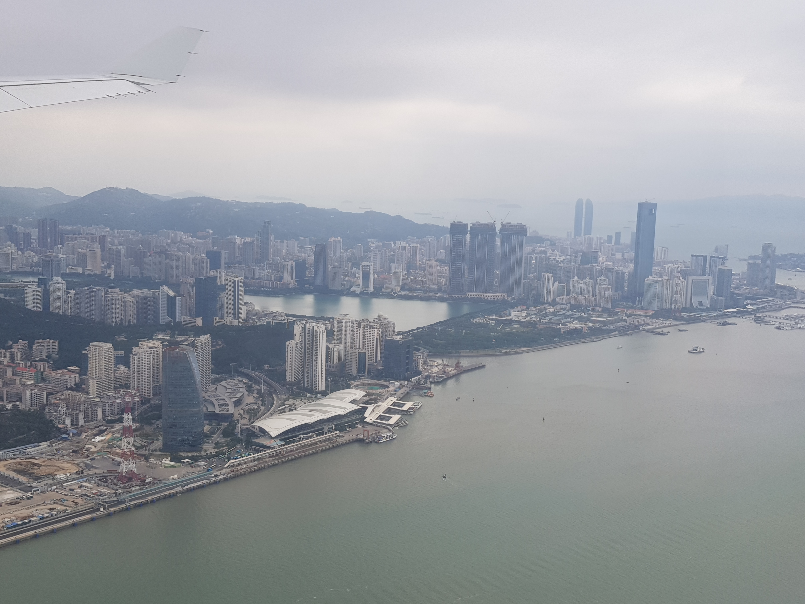
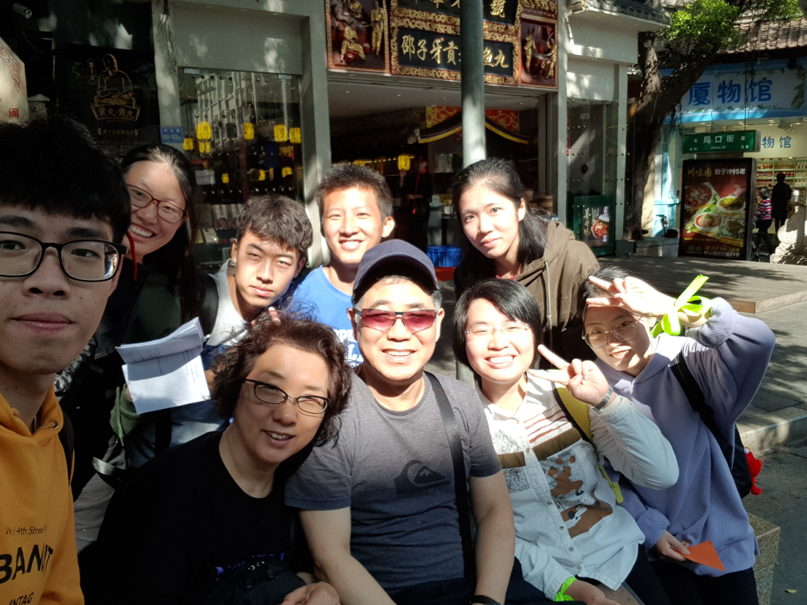

나는 재작년 12월11일부터 약 한 달을 쑤저우와 상하이에서 보냈다. 당시는 코로나 신종폐렴 발생을 모르던 때인 12월13일 금요일, 쑤저우대학 첫 강의를 마치고 주말이어서 저녁에 진지후金鷄湖 리공디李公堤에 가서 산보를 했다. 리공디는 1890년대 청나라 말기 진지후 호수에 축조한 제방이다, 당시 이곳은 우기만 되면 홍수가 잦아 인민들에게 큰 고충을 주었는데 당시 이 고을 쑤저우부苏州府 위안허현元和县의 현령县令인 리챠오칭李超琼이 제안하여 이 제방을 축조하게 되었다. 이후 홍수피해가 사라졌고 이에 지역인민들이 감사한 마음으로 이 제방은 현령 리차오칭 공公이 세운 제방이라며 '리공디李公堤'라고 불렀다고 한다.


이후 난 작년 1월8일 중국에서 귀국했다. 그리고 2주 후인 1월22일 밤, 우한시 정부는 내일 23일 10시부터 코로나 신종폐렴 확산으로 우한시에 전면봉쇄령을 내린다는 발표를 들었다. 중국에서 지내던 때를 회고해 보니 그전 12월 중순경 쑤저우대학 강좌교수로 한 학기 강의를 하고 또 종강하고 여행도 다녔는데, 알고보니 그때도 우한에서 코로나 신종폐렴이 발병은 했으나 그 정체를 알지 못해서 별다른 조치가 없던 때였다. 그래서 강의도 여행도 모두 예정한 대로 할 수 있었던 것을 생각하고 또, 우선 아무런 문제 없이 마칠 수 있었던 것에 대하여 감사한 마음을 가지지 않을 수가 없다. 요즘 코로나로 해외여행은 생각조차 못하는 데 그때 코로나를 늦게 알게 되어 그래서 예정한 수업과 여행도 할 수 있었고 아무 피해 없이 지나온 일이 좋은 일이었다는 생각이 듭니다. 지하철을 타고 또 천천히 걸으며 구경도 다녔었는데 시간이 더 있었으면 좋았겠다고 생각도 했으나 1개월간 체류할 수 있는 비자이기도 했으나 또, 한편으로는 더 체류하지 않고 귀국하여 코로나 신종폐렴에 노출 위험도 없었고 이 또한 다행스러운 일이라는 생각도 하게 됩니다.
지금 쑤저우는 중국경제개방 30년을 맞아 국제도시로 발전했고 리공디 제방은 또다시 풍정이 좋은 국제적 위락단지로 변신했다. 산보하러 리공디 중간출입문으로 들어서니 맨 먼저 한국음식점 청학골青鹤谷과 웨딩사진스튜디오 한국예장韩国艺匠이 눈에 들어왔다. 또 멀리에 한국찜질방도 있단다. 뉴욕뉴욕纽约纽约, 스타벅스, 영국차카페 Ann's, 일식당 등 다국적 점포들도 많으나 당연 중국계 상점이 월등히 더 많다. 리공디 상업보행가 점포건물들은 강남수향 전통의 모던스타일이 주류이고 또, 유럽풍으로 호수와 잘 어우지고 좋다. 그날 밤 리공디를 산보하면서 본 진지후 하늘엔 달도 밝게 떴다. 호수에 비친 달빛이 미풍에 흔들리는 것을 보며 괜한 그리움에도 젖어 봤는데... 달은 본디 사람의 마음을 잘 흔들어 놓는다~!
